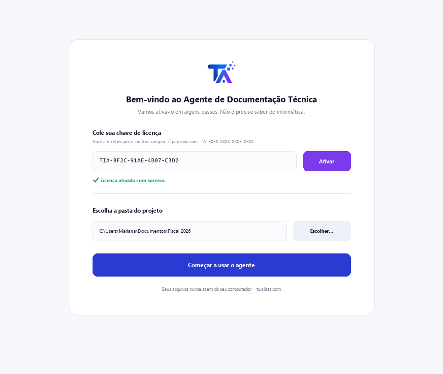
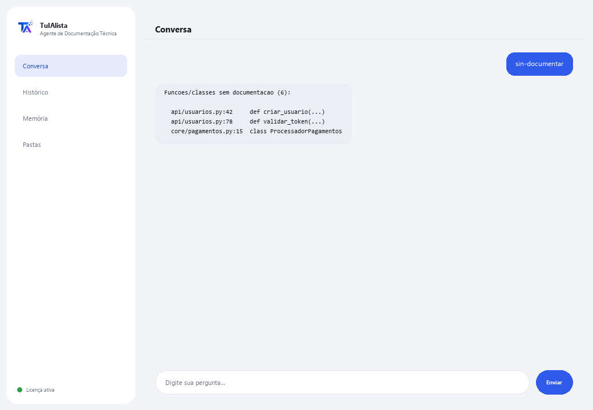

Agente de Documentação Técnica
Gera e mantém a documentação técnica do seu software a partir do seu próprio código, sem que o código saia do seu computador.
O que resolve e o que você precisa?
A documentação sempre fica atrasada: ninguém tem tempo de escrever o README, explicar o que cada arquivo faz ou manter um FAQ. Este agente escaneia seu projeto e faz isso por você — suporta Python, JS/TS, Java, C/C++, Go, PHP, Ruby, SQL, e também RPG (AS/400/IBM i) e COBOL.
- Você precisa: sua chave de licença (TIA-XXXX-XXXX-XXXX-XXXX) e a pasta do projeto. Nada de Python nem conhecimento técnico para instalar (embora seja pensado para equipes de desenvolvimento).
- Primeiro resultado em menos de 5 minutos: instala, ativa, escolhe sua pasta e roda readme para seu primeiro README gerado.
- Seu código-fonte nunca sai do seu computador — o escaneamento roda localmente.
soporte@tuialista.com ou acesse tuialista.com/soporte — normalmente respondemos no mesmo dia útil.1 O que este agente faz
Você aponta para a pasta do projeto e ele:
- Escaneia o código e extrai sua estrutura (funções, classes, comentários, imports).
- Gera um README profissional do projeto (estrutura, componentes, dependências, uso).
- Documenta um arquivo específico em detalhe (propósito, funções, parâmetros, notas).
- Gera um FAQ técnico com perguntas e respostas baseadas no código.
- Detecta funções e classes sem documentação.
- Monta um mapa de dependências entre arquivos (internas e externas).
- Responde perguntas livres sobre o código.
Suporta muitas linguagens: Python, JavaScript/TypeScript, Java, Kotlin, C/C++, Go, PHP, Ruby, SQL, e também RPG (AS/400/IBM i) e COBOL, entre outras.
2 Instalação (2 minutos)
Para Windows. Não precisa de internet o tempo todo nem enviar nada para a nuvem.
Baixe o instalador em tuialista.com/descargar (agente Documentação Técnica) e abra-o. Ele cria um atalho na sua área de trabalho com o logo — não precisa de Python nem terminal.
Dê duplo clique no novo ícone. Cole sua chave de licença (você a recebeu por e-mail na compra) e clique em Ativar. Você verá um check verde quando for válida.
Selecione a pasta do projeto e clique em Começar a usar o agente. Na próxima vez ele abre direto — lembra sua chave e sua pasta.

3 Como usar
O agente abre uma janela de chat, como um app de mensagens — não é uma tela preta de programador. Você escreve seu comando ou pergunta na caixa de texto abaixo, clica em Enviar (ou Enter), e a resposta aparece como uma mensagem, igual nesta imagem real:

Os comandos a seguir são as palavras que você pode escrever nessa mesma caixa de texto:
> readmeREADME.md profissional com nome, estrutura, componentes principais, como se relacionam, dependências e instruções de uso.
> faqDe 8 a 12 perguntas frequentes técnicas (arquitetura, como algo funciona, como mudar uma funcionalidade...) com respostas baseadas no seu código.
> documentar <arquivo>Documentação em detalhe de um arquivo: propósito, cada função/procedimento (o que faz, parâmetros, retorno), dependências e notas.
> sin-documentarFunções e classes sem comentários nem docstring, com arquivo e linha.
> dependenciasMapa de dependências: por arquivo, quais módulos internos do projeto e quais bibliotecas externas usa.
> analizar <arquivo>Estrutura detectada de um arquivo (classes, funções com sua linha, imports) sem chamar a IA.
> pergunta livre?Escreva qualquer dúvida em linguagem natural, ex.: onde é validado o token de sessão?
> sairEncerra a sessão (exit também funciona).
4 Exemplos de uso comum
Documentar um projeto novo
readme → faq
Entender um arquivo legado
analizar legacy/processo.cbl → documentar legacy/processo.cbl — funciona até com COBOL ou RPG de sistemas AS/400.
Revisar a dívida de documentação
sin-documentar
Se orientar no código
como a aplicação se conecta ao banco de dados?
5 Perguntas frequentes
Meu código é enviado para a internet?
Quais linguagens ele suporta?
Preciso instalar bibliotecas extras?
Ele ignora pastas como node_modules?
Ele modifica meu código ou escreve arquivos?
Quão grande pode ser o projeto?
Ele funciona para código AS/400 (RPG/COBOL)?
Em que idioma ele responde?
A documentação é 100% correta?
Posso documentar um único arquivo sem escanear tudo?
6 Solução de problemas
Mostra “0 arquivos indexados”
Não encontra um arquivo com documentar/analizar
O README ignora alguns arquivos
Diz “Licença inválida” ou pede para reconectar
“Nenhum provedor de IA configurado”
Nenhuma dessas soluções resolveu seu problema? Escreva para nós diretamente — teremos prazer em revisar com você.
soporte@tuialista.com ou acesse tuialista.com/soporte — normalmente respondemos no mesmo dia útil.7 Privacidade e confidencialidade
Seu código-fonte nunca sai do seu computador.
- O agente escaneia o projeto e extrai sua estrutura localmente, no seu próprio computador. Não envia seu código para nenhum servidor.
- A detecção de estrutura, a dívida de documentação (sin-documentar) e o mapa de dependências são calculados no seu computador.
- A única coisa que trafega pela internet é: (1) uma verificação de que sua licença está ativa — que não inclui seu código —, e (2) ao gerar README, FAQ, documentar um arquivo ou responder uma pergunta, fragmentos do código (os mais relevantes) são enviados ao motor de IA para redigir o texto.